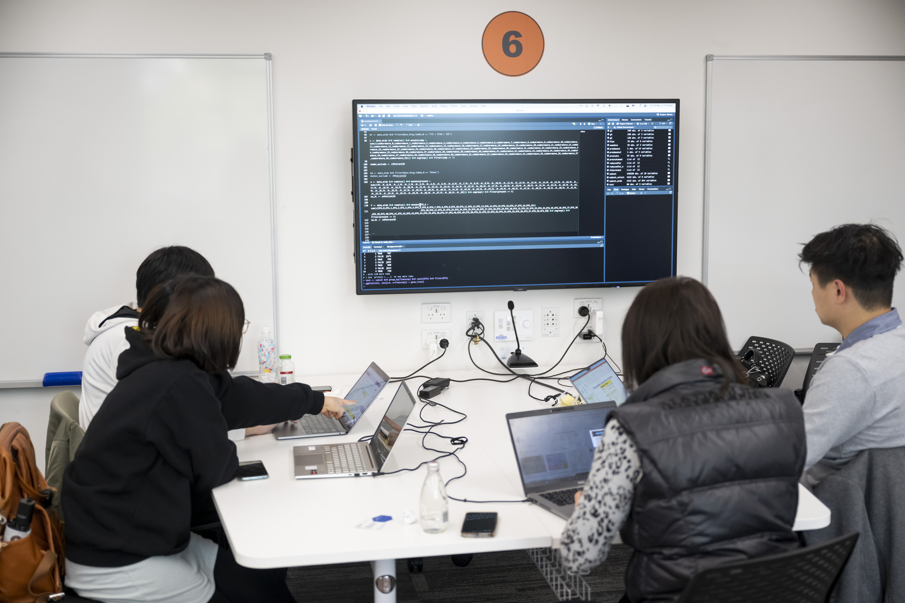

CBDRH Datathon: a taste of a (real) synthetic dataset
Ivy Cerelia Valerie ![]()

Ivy has completed the first term of her master’s program in Health Data Science. She graduated as a medical doctor in 2020 and has worked with health data since 2021. She takes great delight in small surprises like seeing penguins for the first time and learning words she cannot pronounce.
The first CBDRH datathon
I probably say this about everything I try for the first time, but the datathon was unlike anthing I’ve experienced before. I enjoyed the datathon so much and I will tell you why.
Right from the start, we were given a synthetic HIV dataset1 to work with. My first question was “can we treat this like real data?”. The answer was a solid “Yes!”. I am privileged enough to have experience managing a real-life HIV dataset and I can see how synthetic data are increasingly important for data scientists that don’t have the same experience. The HIV epidemic is still ongoing despite the great strides of preventive efforts at a global level, and sociopolitical and economic repercussions further complicate HIV case management2. Most of the HIV field officers and program managers whom I interviewed in the past would agree that data sharing is a complex issue and is arguably one of the main obstacles to HIV research at scale. So, the availability of realistic synthetic data provides an opportunity for researchers to develop useful tools and insights without risking patient confidentiality.3

The little surprises
The content and context of the synthetic dataset are tailored to mimic a real dataset while minimising patient disclosure risk. Information was available on 9,000 individuals over a 5-year period and, just like in a real dataset, we had patient demographics, treatment, and diagnostic/monitoring variables to build our research question and start unpicking correlation from causation. An advantage of the synthetic data is that we had complete follow-up on all patients, whereas in reality it is very difficult to follow-up every individual without some missing data.
I would not say that the number of given variables was a limitation to formulate a research question. I found myself reading through HIV treatment guidelines and discussing the possibility of deriving interesting new variables with my teammates. Literally nothing will prevent you to derive more variables as long as you can define the scope and assumptions well to align with your analysis plan.
La pièce de resistance
Effective communication was the cornerstone of this event. We were given plenty of time to register and excellent guidance was provided ahead of the event, especially at the information session where we got some background knowledge from field experts. Personalised group allocation allowed participants to work together and communicate better. I was amazed to see the variety of ideas and approaches that collided at the final presentation session when each group showcased their results.
The key takeaways
Time flies when you are having fun, and the same thing applies to synthetic data exploration. By utilising a realistic dataset we got to see tangible applications of the software and methods we are learning. It got me thinking about what might be possible with future versions of the dataset and the bigger picture of potential research questions—we can develop useful tools and insights with real-world applications.
This datathon event provides an excellent hands-on experience for students, preparing us for our future endeavors as data scientists. It is never too soon to start exploring and analysing data. Stay curious üòä
Footnotes
Kuo NI-H, Garcia F, Sönnerborg A, Zazzi M, Böhm M, Kaiser R, Polizzotto M, Jorm L, Barbieri S. Generating Synthetic Clinical Data that Capture Class Imbalanced Distributions with Generative Adversarial Networks: Example using Antiretroviral Therapy for HIV. Available at: https://arxiv.org/abs/2208.08655↩︎
Delpech V. The HIV epidemic: global and United Kingdom trends. Medicine (Abingdon). 2022 Apr;50(4):202-204. doi: 10.1016/j.mpmed.2022.01.002.↩︎
Gonzales A, Guruswamy G, Smith SR. Synthetic data in health care: A narrative review. PLOS Digit Health. 2023 Jan 6;2(1):e0000082. doi: 10.1371/journal.pdig.0000082.↩︎